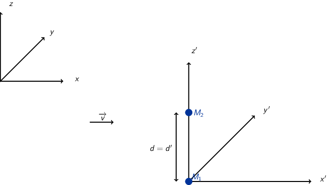
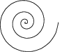
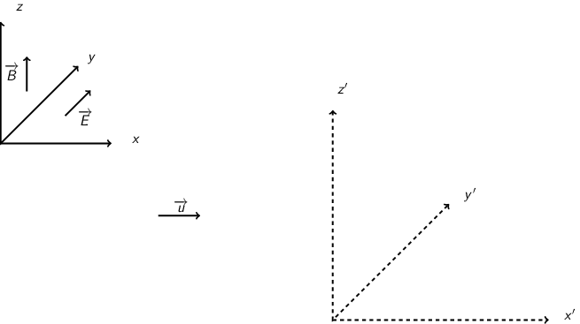

TD10 : Électromagnétisme & relativité
1 Introduction
Transformation de Lorentz : \(\beta=\tfrac{v}{c}\) et \(\gamma=\tfrac{1}{\surd{1-\beta^2}}\). Si \(\mathcal{R}'\) est en mouvement rectiligne uniforme selon l'axe \(x\) par rapport à \(\mathcal{R}\) alors
\begin{equation*} \begin{bmatrix} ct'\\x'\\y'\\z' \end{bmatrix} = \begin{bmatrix} \gamma&-\beta\gamma&0&0\\ -\beta\gamma&\gamma&0&0\\ 0&0&1&0\\ 0&0&0&1 \end{bmatrix} \cdot \begin{bmatrix} ct\\x\\y\\z \end{bmatrix} \end{equation*}et la transformation inverse
\begin{equation*} \begin{bmatrix} ct\\x\\y\\z \end{bmatrix} = \begin{bmatrix} \gamma&+\beta\gamma&0&0\\ +\beta\gamma&\gamma&0&0\\ 0&0&1&0\\ 0&0&0&1 \end{bmatrix} \cdot \begin{bmatrix} ct'\\x'\\y'\\z' \end{bmatrix} \end{equation*}Transformation du champ EM :
Composantes tangentielles au déplacement \(\vv{E}'_\parallel=\vv{E}_\parallel\) et \(\vv{B}'_\parallel=\vv{B}_\parallel\).
Composantes normales au déplacement
\begin{align*} \vv{E}'_\perp&= \gamma\,\left(\vv{E}_\perp+\vv{v}\times\vv{B}_\perp\right)\\ \vv{B}'_\perp&= \gamma\,\left(\vv{B}_\perp-\vv{v}\times\frac{\vv{E}_\perp}{c^2}\right) \end{align*}ou
\begin{align*} \vv{E}_\perp&= \gamma\,\left(\vv{E}'_\perp-\vv{v}\times\vv{B}'_\perp\right)\\ \vv{B}_\perp&= \gamma\,\left(\vv{B}'_\perp+\vv{v}\times\frac{\vv{E}'_\perp}{c^2}\right) \end{align*}Remarques :
- les "quantités" perpendiculaires au déplacement telles les longueurs (\(y\) et \(z\) dans notre cas), ne subissent pas les effets de la relativité. Autrement dit une longueur \(y\) restera inchangée sous la transformation \(\mathcal{R}\rightarrow\mathcal{R}'\) : \(y=y\prime\)
2 Force entre des électrons qui se déplacent côte à côte

Dans le référentiel \(R\), deux électrons \(M_1\) et \(M_2\) se déplacent côte à côte à vitesse constante \(v\) sur deux droites parallèles distantes de \(d\). Soit \(\mathcal{E}\) leur énergie cinétique commune et \(R'\) le référentiel dans lequel ils sont immobiles. Faire les applications numériques avec \(d = 1\) mm, \(\mathcal{E} = 1\) eV et \(\mathcal{E} = 1\) MeV.
- Calculer dans \(R'\) les champs \(\vv{E}'\) et \(\vv{B}'\) créés par \(M_1\) sur \(M_2\). En déduire la force qui s'exerce sur \(M_2\). Quelle est la force qui s'exerce sur \(M_1\) ?
Soit \(\mathcal{R}'\) le référentiel où les particules sont au repos. Le champ électrique exercé sur \(M_2\) par \(M_1\) s'écrit
\begin{equation*} \vv{E}'(M_2) = \frac{q_1}{4\pi\epsilon_0}\times\frac{\vv{M_1M_2}}{M_1M_2^3}=-\frac{e}{4\pi\epsilon_0\,d^2}\vv{u}_{z'} \end{equation*}i.e. le champ électrique coulombien. Les particules étant au repos, il n'y a pas de déplacement de charge donc \(\vv{B}'(M_2)=\vv{0}\). La force (coulombienne) qui s'exerce sur l'électron en \(M_2\) est
\begin{equation*} \vv{F}'(M_2)=-e\vv{E}'(M_2)-e\vv{v}\times\vv{B}'(M_2)=\frac{e^2}{4\pi\epsilon_0\,d^2}\vv{u}_{z'}=-\vv{F}'(M_1) \end{equation*}soit une force répulsive.
- Répondre aux mêmes questions dans \(R\).
Dans \(\mathcal{R}\), on applique les règles de transformation du champ EM soit \(\vv{E}'_\parallel=\vv{E}_\parallel=\vv{0}\) et \(\vv{B}'_\parallel=\vv{B}_\parallel=\vv{0}\). Les composantes normales deviennent
\begin{align*} \vv{E}_\perp&= \gamma\,\left(\vv{E}'_\perp-\vv{v}\times\vv{B}'_\perp\right)\\ \vv{B}_\perp&= \gamma\,\left(\vv{B}'_\perp+\vv{v}\times\frac{\vv{E}'_\perp}{c^2}\right) \end{align*}On déduit que
\begin{equation*} \vv{E}_\perp=\gamma\left(\vv{E}'_\perp-\vv{v}\times\vv{B}'_\perp\right)=\gamma\vv{E}'_\perp=-\frac{\gamma e}{4\pi\epsilon_0\,d^2}\vv{u_z} \end{equation*}sachant que \(\vv{u_z}=\vv{u_{z'}}\).
Le champ magnétique \(\vv{B}_\perp\) est égal à \(\gamma\vv{v}\times\frac{\vv{E}'_\perp}{c^2}\) soit
\begin{align*} \vv{B}_\perp&=\frac{\gamma\,vE'_\perp}{c^2}\,\vv{u}_x\times\vv{u}_z=-\frac{\gamma\,vE'_\perp}{c^2}\,\vv{u}_y\\ &=\frac{\gamma v}{c^2}\times\frac{e}{4\pi\epsilon_0\,d^2}\,\vv{u}_y\text{ avec } \mu_0\epsilon_0c^2=1\\ &=\frac{\mu_0\gamma ve}{4\pi d^2}\vv{u}_y \end{align*}La force résultante est égale à
\begin{align*} \vv{F}(M_2)&=-e\vv{E}(M_2)-e\vv{v}\times\vv{B}(M_2)\\ &=-e\gamma\vv{E}'(M_2)+e\gamma v^2\vv{u}_x\times\vv{u}_y\frac{E'(M_2)}{c^2}\\ &=-e\gamma\vv{E}'(M_2)\left[1-\frac{v^2}{c^2}\right]\text{ avec }\gamma=\frac{1}{\surd{1-v^2/c^2}}\\ &=-e\gamma\vv{E}'(M_2)\times\frac{1}{\gamma^2}=\frac{\vv{F}'(M_2)}{\gamma} \end{align*}Globalement, \(F'(M_2)>F(M_2)\). La force d'origine magnétique induite par le déplacement des particules compense l'augmentation de la force électrique de répulsion.
Application numérique :
\(\mathcal{E}=\gamma mc^2 - mc^2=(\gamma-1)mc^2\) donc \(\gamma=1+\frac{\mathcal{E}}{mc^2}\). La masse de l'électron est 0.511 MeV.
Pour \(\mathcal{E}=\unit[1]{eV}\), \(\gamma\sim1\)
\begin{align*} F&=F'=\frac{e^2}{4\pi\epsilon_0\,d^2}=\frac{e^2\mu_0c^2}{4\pi d^2}\\ &=\frac{e^2c^2\times4\pi\,10^{-7}}{4\pi d^2}=\frac{(1.6\,10^{-19})^2\times(3\,10^8)^2\times10^{-7}}{(10^{-3})^2}\\ &=\unit[2.3\,10^{-22}]{N} \end{align*}Pour \(\mathcal{E}=\unit[1]{MeV}\), \(\gamma\simeq3\)
\begin{align*} F&=\frac{F'}{3}=\unit[7.7\,10^{-23}]{N} \end{align*}- Calculer les forces à l'ordre 2 en \(\beta\) lorsque \(v\to0\). Conclusion.
\(v\rightarrow0\), \(\beta\ll1\) et donc \(\gamma\simeq1+\tfrac{\beta^2}{2}\)
\begin{align*} \vv{F}&=\frac{\vv{F}'}{\gamma}\\ &=\vv{F}'\times\left(1-\beta^2\right)^{1/2}\\ &\simeq\left(1-\tfrac{\beta^2}{2}\right)\vv{F}' \end{align*}3 Fil chargé
Dans le référentiel \(R\) du laboratoire, un fil cylindrique infini d’axe \(Ox\), de section \(S\) se déplace à la vitesse \(\vv{u}=u\vv{u}_x\). Soit \(R'\) le référentiel propre du fil. Dans \(R'\), le fil est chargé uniformément en volume de sorte que sa charge linéique est \(\lambda'_0\). Les charges sont immobiles dans \(R'\). On pose \(\beta=u/c\) et \(\gamma=(1−\beta^2)^{-1/2}\).
Calculs dans \(R'\)
Calculer dans \(R'\), la charge volumique \(\rho'\), la densité de courant \(\vv{j}'\), les champs électrique \(\vv{E}'\) et magnétique \(\vv{B}'\) en un point \(M\) situé à la distance \(D'\) de \(O'x'\).
Dans \(\mathcal{R}'\), les charges électriques sont immobiles ≡ électrostatique. La charge électrique \(Q'\) se déduit de la densité linéique de charge \(\lambda_0'\)
\begin{equation*} Q'=\lambda_0'\times\ell'=\rho'\times S'\times\ell' \end{equation*}d'où \(\rho'=\tfrac{\lambda_0'}{S'}=\tfrac{\lambda_0'}{S}\) car la surface \(S\) est une quantité perpendiculaire au déplacement donc \(S=S'\).
Les charges étant immobiles, il n'y a pas de courant d'où \(\vv{j}'=\vv{0}\) et donc pas de champ magnétique \(\vv{B}'=\vv{0}\). Le champ électrique \(\vv{E}'\) se déduit du théorème de Gauss, en évaluant au préalable, les symétries et les invariances de la distribution de charge. Ainsi, en coordonnées cylindriques où \(\vv{u_x}=\vv{u_z}\), les plans \((\vv{u}_r,\vv{u}_\theta)\) et \((\vv{u_r},\vv{u_z})\) sont plans de symétrie de la distribution de charge. Le champ électrique résultant est donc contenu dans chacun de ces plans soit \(\vv{E}(M) = E(M)\vv{u_r}\). Par ailleurs, la distribution de charge est invariante par rotation \(\theta\) et par translation \(x\equiv z\) donc \(E(M)=E(r,\theta,z)=E(r)\).
Le théorème de Gauss
\begin{equation*} \varoiint_{\mathcal{S}}\vv{E}\cdot d\vv{S}=\frac{Q_\text{int.}}{\epsilon_0} \end{equation*}où la surface de Gauss \(\mathcal{S}\) est un cylindre de rayon \(D'\) et de hauteur \(h\). En tenant compte des invariances et symétries de la distribution de charge, on obtient le champ \(\vv{E}'(M)\)
\begin{equation*} E'(M)\times2\pi D'\times h = \frac{\lambda_0'\times h}{\epsilon_0} \end{equation*}soit
\begin{equation*} \vv{E}'(M)=\frac{\lambda_0'}{2\pi\epsilon_0D'}\vv{u_r} \end{equation*}- Calcul dans \(R\)
- On considère une portion du fil de longueur \(L'\) et de section \(S'\) dans \(R'\). Calculer sa longueur \(L\) et sa section \(S\) dans \(R\). En déduire la charge volumique \(\rho\) et le vecteur densité de courant \(\vv{j}\) dans \(R\). Vérifier que le 4-vecteur \(\vv{J}=(\rho c,\vv{j})\) est un quadrivecteur de Lorentz.
- Calculer, à partir de \(\rho\) et \(\vv{j}\), les champs électriques \(\vv{E}(M)\) et magnétique \(\vv{B}(M)\) dans R.
Contraction des longueurs car \(L\) est colinéaire au déplacement du cylindre.
\begin{equation*} L=\frac{L'}{\gamma}\text{ mais } S = S'\text{ car } S,S'\perp\vv{u} \end{equation*}Invariance de la charge électrique \(Q=Q'\) (ce postulat n'a jamais été mis en défaut).
\begin{equation*} Q=Q'=\rho'\times S'\times L'=\rho\times S\times L \end{equation*}d'où
\begin{equation*} \rho=\rho'\times\frac{L'}{L}=\gamma\rho' \end{equation*}Densité de courant \(\vv{j}\)
\begin{equation*} \vv{j}=\rho\cdot\vv{u}=\rho u\vv{u_x} \end{equation*}Le 4-vecteur \(\vv{J}=(\rho c,\vv{j})\) est un 4-vecteur de Lorentz si l'égalité
\begin{equation*} \begin{bmatrix} \rho' c\\j'_x\\j'_y\\j'_z \end{bmatrix} = \begin{bmatrix} \gamma&-\beta\gamma&0&0\\ -\beta\gamma&\gamma&0&0\\ 0&0&1&0\\ 0&0&0&1 \end{bmatrix} \cdot \begin{bmatrix} \rho c\\j_x\\j_y\\j_z \end{bmatrix} \end{equation*}est vérifiée. La distribution de courant est nulle dans \(\mathcal{R}'\) donc \(j'_x=j'_y=j'_z=0\) \(j_y=j_z=0\) et
\begin{align*} \gamma\rho c - \beta\gamma j_x&= \gamma\rho c-\beta\gamma\rho u\\ &=\gamma\rho c-\beta\gamma\rho u\times\frac{c}{c}\\ &=\gamma\rho c\left(1-\beta^2\right)\\ &=\gamma\rho c\times\frac{1}{\gamma^2}=\frac{\rho c}{\gamma}\\ &=\rho' c \end{align*}De même,
\begin{align*} -\beta\gamma\rho c+\gamma j_x&=-\beta\gamma\rho c+\gamma\rho u\\ &=-\gamma\rho u+\gamma\rho u\\ &=0=j'_x \end{align*}Densité volumique et linéique de charge \(\rho=\gamma\rho'\rightarrow\lambda_0=\gamma\lambda_0'\) d'où
\begin{equation*} \vv{E}(M)=\frac{\gamma\lambda_0'}{2\pi\epsilon_0\,D}\vv{u_r} \end{equation*}Le courant dans le fil est \(dI=\vv{j}.d\vv{S}\) soit \(I=j\times S\) et le champ magnétique \(\vv{B}(M)\) s'écrit (cf. polycopié page 88, Chapitre Magnétostatique)
\begin{align*} \vv{B}(M)&=\frac{\mu_0I}{2\pi\,D}\vv{u_\theta}\\ &=\frac{\mu_0jS}{2\pi\,D}\vv{u_\theta} \end{align*}or \(j=\rho u=\gamma\rho' u=\frac{\gamma\lambda_0' u}{S}\) d'où
\begin{align*} \vv{B}(M)&=\frac{\gamma\mu_0\lambda_0' u}{2\pi\,D}\vv{u_\theta}\text{ avec } \mu_0\epsilon_0c^2=1\\ \vv{B}(M)&=\frac{\gamma u}{c^2}E'(M)\vv{u_\theta} \end{align*}- Transformation des champs
- Vérifier dans ce cas particulier les formules de transformation relativiste du champ électromagnétique.
- Vérifier que \(\vv{E}.\vv{B}\) est un invariant de Lorentz.
- Vérifier que \(E^2-B^2c^2\) est un invariant de Lorentz.
Transformation du champ électrique avec \(\vv{B}'=\vv{0}\)
\begin{align*} \vv{E}_\perp&= \gamma\,\left(\vv{E}'_\perp-\vv{u}\times\vv{B}'_\perp\right)\\ \vv{E}(M)&= \gamma\,\vv{E}'(M)\text{ vrai } \vv{E}(M)=\frac{\gamma\lambda_0'}{2\pi\epsilon_0\,D}\vv{u_r} \end{align*}Transformation du champ magnétique
\begin{align*} \vv{B}_\perp&= \gamma\,\left(\vv{B}'_\perp+\vv{u}\times\frac{\vv{E}'_\perp}{c^2}\right)\\ \vv{B}(M)&=\gamma u\frac{E'(M)}{c^2}\vv{u_x}\times\vv{u_r}\\ &=\frac{\gamma u}{c^2}E'(M)\vv{u_\theta} \end{align*}\(\vv{E}'.\vv{B}'=0\) et \(\vv{E}.\vv{B}=\frac{\gamma^2u}{c^2}E^{\prime2}\,\vv{u_\theta}.\vv{u_r}=0\)
\begin{align*} E^2-B^2c^2 &= (\gamma E')^2 - \left(\frac{\gamma u}{c^2}\right)^2E^{\prime2}c^2\\ &=(\gamma E')^2\left(1-\frac{u^2}{c^2}\right)=E^{\prime2}\\ &=E^{\prime2}-B^{\prime2}c^2\text{ puisque }B'=0 \end{align*}4 Particule chargée dans un champ magnétique uniforme DM
Une particule de charge \(q\), de masse \(m\), est lancée avec la vitesse initiale \(\vv{v}_0=v_0\vv{u}_x\) dans une région où règne un champ magnétique constant, uniforme \(\vv{B}=B\vv{u}_z\). On pose \(\gamma=(1-v^2/c^2)^{-1/2}\) où \(\gamma\) dépend a priori du temps.
Rappeler L'impulsion généralisée \(\vv{p}\) de la particule et son énergie \(\mathcal{E}\). Montrer que les équations du mouvement s'écrivent :
\begin{align*} \frac{d}{dt}(\gamma m\vv{v})=q\vv{v}\times\vv{B} \end{align*}\(\mathcal{E}\) est-elle constante ? En déduire que le mouvement est uniforme et calculer \(\gamma\). En comparant à la mécanique non relativiste, décrire la trajectoire de la particule.
L'impulsion relativiste s'écrit \(\vv{p}=\gamma m\vv{v}\), l'énergie totale étant égale à \(\mathcal{E}=\gamma mc^2\). Le principe fondamental de la dynamique devient
\begin{align*} \frac{d\vv{p}}{dt}&=\Upsigma\vv{F}\\ \frac{d}{dt}(\gamma m\vv{v})&=q\vv{v}\times\vv{B} \end{align*}L'énergie totale \(\mathcal{E}\) est égale à la variation temporelle de puissance \(\tfrac{d\mathcal{P}}{dt}\). Or
\begin{align*} \mathcal{P}&=\vv{F}_\text{magnétique}.\vv{v}\\ &=(q\vv{v}\times\vv{B}).\vv{v}\\ &=0 \end{align*}L'énergie \(\mathcal{E}\) est donc constante → \(v=v_0\) et \(\gamma=\tfrac{1}{\surd{1-v_0^2/c^2}}\). L'équation du mouvement devient
\begin{align*} \gamma m\frac{d\vv{v}}{dt}&=q\vv{v}\times\vv{B} \end{align*}soit, au facteur \(\gamma\) près, identique à l'équation du mouvement pour une particule non-relativiste. La pulsation \(\omega=\tfrac{qB}{m\gamma}\) est inférieure à la pulsation cyclotron classique \(\omega_c=\tfrac{qB}{m}\). La trajectoire est alors circulaire autour du champ magnétique \(\vv{B}\) et de rayon \(R=\gamma\tfrac{mv_0}{qB}\).
On suppose désormais que la particule rayonne une puissance donnée par la formule d'Abraham :
\begin{align*} \mathcal{P}_r=\frac{q^2\gamma^6}{6\pi\epsilon_0c^3}\left[\vv{a}^2-\left(\frac{1}{c}\vv{v}\times\vv{a}\right)^2\right] \end{align*}où \(\vv{a}\) est l'accélération. Déterminer l'énergie rayonnée \(\mathcal{E}_r\) par tour. Que devient \(\mathcal{E}_r\) à la limite ultra-relativiste.
Application numérique : calculer \(\mathcal{E}_r\) pour les électrons d'énergie \(\mathcal{E}=6\) GeV qui circulent sur une orbite circulaire de rayon \(R=134\) m à l'ESRF (Grenoble). Comparer \(\mathcal{E}_r\) à \(\mathcal{E}\).
L'accélération dans le cas d'un mouvement uniforme circulaire est l'accélération centripète d'expression
\begin{align*} \vv{a}=\frac{d\vv{v}}{dt}=-\frac{v_0^2}{R}\vv{u_r} \end{align*}Le produit vectoriel \(\vv{v}\times\vv{a}\) devient
\begin{align*} \vv{v}\times\vv{a}=v_0\vv{u_\theta}\times-\frac{v_0^2}{R}\vv{u_r}=\frac{v_0^3}{R}\vv{u_z} \end{align*}La puissance rayonnée \(\mathcal{P}_r\) se réduit à
\begin{align*} \mathcal{P}_r&=\frac{q^2\gamma^6}{6\pi\epsilon_0c^3}\left[\vv{a}^2-\left(\frac{1}{c}\vv{v}\times\vv{a}\right)^2\right]\\ &=\frac{q^2\gamma^6}{6\pi\epsilon_0c^3}\left[\frac{v_0^4}{R^2}-\frac{v_0^6}{R^2c^2}\right]\\ &=\frac{q^2\gamma^6}{6\pi\epsilon_0c^3}\times\frac{v_0^4}{R^2}\left[1-\frac{v_0^2}{c^2}\right]\text{ avec } \frac{1}{\gamma^2}=1-\frac{v_0^2}{c^2}\\ &=\frac{q^2\gamma^4}{6\pi\epsilon_0c^3}\times\frac{v_0^4}{R^2}=\text{constante} \end{align*}et l'énergie rayonnée par tour \(\mathcal{E}_r=\mathcal{P}_r\times T\) avec \(T=\tfrac{2\pi R}{v_0}\) devient
\begin{align*} \mathcal{E}_r&=\frac{q^2\gamma^4}{6\pi\epsilon_0c^3}\times\frac{v_0^4}{R^2}\times\frac{2\pi R}{v_0}\\ &=\frac{q^2\gamma^4}{3\epsilon_0R}\times\frac{v_0^3}{c^3} \end{align*}Dans la limite ultra-relativiste, \(v\rightarrow c\), l'énergie rayonnée est égale à \(\mathcal{E}_r=\frac{q^2\gamma^4}{3\epsilon_0R}\).
Application numérique :
Le faisceau de particules est constitué d'électrons de masse \(mc^2=\unit[0.511]{MeV}\). Le facteur de Lorentz \(\gamma\) se déduit de l'énergie totale \(\mathcal{E}=\unit[6]{GeV}\)
\begin{equation*} \gamma=\frac{\mathcal{E}}{mc^2}=11\,742\text{ soit }\frac{v}{c}=0.99999999637\simeq1 \end{equation*}L'énergie rayonnée exprimée en eV est alors égale à
\begin{align*} \left.\mathcal{E}_r\right|_\text{eV}&=\frac{e^2}{3\epsilon_0R}\times\gamma^4\times\frac{1}{e}\\ &=\frac{1.6\,10^{-19}}{3\times8.85\,10^{-12}\times134}\times(11742)^4\\ &=\unit[0.855]{MeV}=1.42\,10^{-4}\mathcal{E} \end{align*}- Établir l'équation différentielle vérifiée par \(\gamma(t)\) en faisant l'approximation qu'à chaque instant la trajectoire est un cercle. En déduire la variation de l'énergie \(\mathcal{E}\) de la particule en fonction du temps. Quelle est la limite de \(\mathcal{E}\) quand \(t\) tend vers l'infini ? Décrire qualitativement le mouvement de la particule en tenant compte du rayonnement d'accélération.
Les pertes d'énergie induites par le rayonnement ont pour conséquence une diminution de l'énergie totale \(\mathcal{E}=\gamma mc^2\) : les particules perdent de la vitesse. La variation d'énergie \(d\mathcal{E}\) est égale à \(-\mathcal{P}_r\,dt\) soit une variation du facteur de Lorentz \(\gamma\)
\begin{align*} mc^2d\gamma&=-\mathcal{P}_rdt\\ \frac{d\gamma}{dt}&=-\mathcal{P}_r\times\frac{1}{mc^2}\\ &=-\frac{q^2\gamma^4}{6\pi\epsilon_0c^3}\times\frac{v^4}{R^2}\times\frac{1}{mc^2} \end{align*}En supposant la trajectoire toujours circulaire de rayon \(R=\gamma\tfrac{mv}{qB}=\tfrac{\gamma v}{\omega_c}\)
\begin{align*} \frac{d\gamma}{dt}&=-\frac{q^2\gamma^4}{6\pi\epsilon_0c^3}\times\frac{v^4}{R^2}\times\frac{1}{mc^2}\\ &=-\frac{q^2\gamma^4}{6\pi\epsilon_0c^3}\times\frac{v^4\omega_c^2}{\gamma^2v^2}\times\frac{1}{mc^2}\\ &=-\frac{q^2\omega_c^2}{6\pi\epsilon_0c^3}\times\frac{1}{mc^2}\times\gamma^2v^2\\ \end{align*}or \(\gamma^2v^2=c^2(\gamma^2-1)\) d'où
\begin{align*} \frac{d\gamma}{dt}&=-\frac{q^2\omega_c^2}{6\pi\epsilon_0mc^3}\times\left(\gamma^2-1\right)\\ \frac{d\gamma}{\gamma^2-1}&=-\frac{dt}{\tau}\text{ avec }\tau=\frac{6\pi\epsilon_0mc^3}{q^2\omega_c^2} \end{align*}En intégrant l'équation précédente, on obtient
\begin{align*} \frac{d\gamma}{\gamma^2-1}&=-\frac{dt}{\tau}\\ \frac{d\gamma}{1-\gamma^2}&=\frac{dt}{\tau}\\ \frac{d\gamma}{1+\gamma}+\frac{d\gamma}{1-\gamma}&=2\frac{dt}{\tau}\\ \ln(\gamma+1)-\ln(\gamma-1)&=\frac{2t}{\tau}+\text{constante}\\ \ln\frac{\gamma+1}{\gamma-1}&=\frac{2t}{\tau}+\text{constante}\\ \frac{\gamma+1}{\gamma-1}&=Ke^{\tfrac{2t}{\tau}} \end{align*}où, à \(t=0,\gamma=\gamma_0=\tfrac{1}{\surd{1-v_0^2/c^2}}\), \(K=\frac{\gamma_0+1}{\gamma_0-1}\). On obtient ainsi
\begin{align*} \gamma&=\frac{Ke^{\tfrac{2t}{\tau}}+1}{Ke^{\tfrac{2t}{\tau}}-1}\\ &=\frac{K+e^{-\tfrac{2t}{\tau}}}{K-e^{-\tfrac{2t}{\tau}}} \end{align*}et
\begin{align*} \mathcal{E}=\gamma mc^2=\frac{Ke^{\tfrac{2t}{\tau}}+1}{Ke^{\tfrac{2t}{\tau}}-1}\times mc^2 \end{align*}
Lorsque \(t\rightarrow\infty\), \(\gamma\simeq\frac{K}{K}=1\) et l'énergie totale \(\mathcal{E}\) est alors uniquement l'énergie de masse de la particule, la vitesse et donc l'énergie cinétique sont nulles.
Le rayon \(R\), proportionnel à \(\gamma v\), diminue en fonction du temps. Ainsi, la trajectoire demeure circulaire à chaque instant \(t\) mais avec un rayon de courbure chaque fois plus faible en raison des pertes d'énergie par rayonnement. Les particules décrivent une spirale.
5 Particule chargée dans des champs électrique et magnétique perpendiculaires

Dans le référentiel \(R\) du laboratoire, une particule de charge \(q\), de masse \(m\), est lâchée sans vitesse initiale au point \(O\) dans une région où règnent un champ électrique constante, uniforme \(\vv{E}=E\vv{u}_y\) et un champ magnétique constante, uniforme \(\vv{B}=B\vv{u}_z\) avec \(Bc>E\).
Montrer qu'il existe un référentiel \(R'\) en translation uniforme parallèle à \(\vv{u}_x\) où le champ électrique est nul. Calculer la vitesse \(\vv{u}\) de \(R'\) par rapport à \(R\). On pose \(\beta_e=u/c\) et \(\gamma_e=(1-\beta_e^2)^{-1/2}\). Calculer le champ magnétique \(\vv{B}'\) dans \(R'\) et en déduire la trajectoire et le mouvement de la particule dans \(R'\).
Soit \(\vv{E}=E\vv{u_y}\) et \(\vv{B}=B\vv{u_z}\) avec \(Bc>E\). Le référentiel \(\mathcal{R}'\) doit être tel que \(\vv{E}'=\vv{0}\) soit
\begin{align*} \vv{E}'_\parallel&=\vv{E}_\parallel=\vv{0}\\ \vv{E}'_\perp&=\gamma\left(\vv{E}_\perp+\vv{u}\times\vv{B}_\perp\right)=\vv{0} \end{align*}La première condition est vérifiée du fait que \(\vv{E}\) est orthogonal au vecteur déplacement \(\vv{u}\). La seconde condition est vérifiée si
\begin{align*} \vv{E}+\vv{u}\times\vv{B}&=\vv{0}\\ E\vv{u_y} + uB\,\vv{u_x}\times\vv{u_z}&=\vv{0}\\ E-Bu&=0\\ u&=\frac{E}{B} \end{align*}Pour obtenir un champ électrique nul dans le référentiel \(\mathcal{R}'\), il faut donc que la vitesse de déplacement \(u\) du référentiel \(\mathcal{R}'\) par rapport au référentiel \(\mathcal{R}\) soit égale au rapport du champ électrique \(E\) sur le champ magnétique \(B\). La vitesse ainsi obtenue est, par ailleurs, inférieure à \(c\) du fait que \(Bc>E\).
Calcul du champ magnétique \(\vv{B}'\) :
\begin{align*} \vv{B}'_\parallel&=\vv{B}_\parallel=\vv{0}\\ \vv{B}'_\perp&=\gamma_e\left(\vv{B}_\perp-\vv{u}\times\frac{\vv{E}_\perp}{c^2}\right)\\ &=\gamma_e\left(B\vv{u_z}-\frac{uE}{c^2}\vv{u_x}\times\vv{u_y}\right)\\ &=\gamma_e\left(B\vv{u_z}-\frac{u^2}{c^2}B\vv{u_z}\right)\\ &=\frac{\vv{B}}{\gamma_e} \end{align*}La force de Lorentz \(\vv{F}'\) qui s'applique à la particule de charge \(q\) est purement magnétique \(q\vv{v}\times\vv{B}'\). Le principe fondamental de la dynamique \(\vv{F}'=q\vv{v}\times\vv{B}=m\vv{a}\) se traduit par un trajectoire circulaire de rayon \(R\)
\begin{equation*} \frac{v^2}{R}=\frac{qvB'}{m}\rightarrow R=\frac{mv}{qB'}=\frac{\gamma_emv}{qB} \end{equation*}6 Étude de la charge d'espace

On considère un faisceau cylindrique continu et infini constitué de particules identiques (masse \(m\) et charge \(q\)) de vitesse moyenne \(\vv{u}=u\vv{u}_x\) dans le référentiel \((K)\) du laboratoire. On appelle \((K')\) le référentiel qui se déplace à la vitesse \(u\) par rapport à \((K)\). On suppose que les origines coïncident à \(t=t'=0\). Le rayon du faisceau est \(R_0\) à l'origine, et \(R\) à l'abscisse \(x\).
Étude dans le référentiel propre des particules
La densité volumique de charges \(\rho_0\) est uniforme.
- Quel est le champ électrique \(E'\) crée par le faisceau ? En déduire la force \(F'\) que subit une particule située à la périphérie du faisceau.
À \(t=t'=0\), \(R=R_0\), \(\dot{R}=\dot{R}'=0\) et \(\dot{\theta}=0\)
Dans \(\mathcal{R}'\), les plans \((\vv{u}_r,\vv{u}_\theta)\) et \((\vv{u}_r,\vv{u}_{x'})\) sont des plans de symétrie de la distribution de charge → le champ électrique appartient donc à chacun des plans : \(\vv{E}'(M)=E(M)\vv{u}_r\). De plus, il y a invariance par translation selon l'axe \(x'\) et par rotation d'angle θ : \(\vv{E}'(M)=E(r)\vv{u}_r\).
Théorème de Gauss :
\begin{equation*} \varoiint_\mathcal{S}\vv{E}'(M)\cdot d\vv{S}=\frac{Q_\text{int.}}{\epsilon_0} \end{equation*}
où la surface de Gauss est un cylindre de rayon \(r
Au voisinage de \(r\sim R\), la force subie par une particule de charge \(q\)
devient
soit une force répulsive.
Mécanique classique ou Newtonienne \(\Upsigma\vv{F}=m\vv{a}\) 1
le vecteur accélération \(\vv{a}\) s'écrit en toute rigueur \((\ddot{r}-r\dot{\theta}^2)\vv{u}_r+(2\dot{r}\dot{\theta}+r\ddot{\theta})\vv{u}_\theta\). À défaut de vitesse angulaire \(\dot{\theta}\) initiale, on supposera donc que \(\dot{\theta}=0\).
Solutions du type \(R(t')=Ae^{\alpha t'}+Be^{-\alpha t'}\) où \(\alpha^2=\tfrac{q\rho_0}{2m\epsilon_0}\). Or à \(t'=0\), \(R=R_0\) et \(\dot{R}=0\) d'où \(A\alpha-B\alpha=0\rightarrow A=B\) et \(A+B=R_0\rightarrow A=\tfrac{R_0}{2}\). La solution de l'équation différentielle est ainsi
\begin{equation*} R(t')=\frac{R_0}{2}e^{\alpha t'}+\frac{R_0}{2}e^{-\alpha t'}=R_0\cosh\alpha t' \end{equation*}On suppose que le mouvement transverse i.e. \(R(t')\) est lent soit \(\alpha t'\ll1\). Le cosinus hyperbolique se réduit ainsi à \(\cosh\alpha t'\simeq1+\tfrac{(\alpha t')^2}{2}\). On déduit ainsi la variation relative de \(R\)
\begin{align*} \frac{\Delta R}{R_0}=\frac{R-R_0}{R_0}=\frac{R}{R_0}-1\simeq1+\frac{(\alpha t')^2}{2}-1&=\frac{\alpha^2}{2}t^{\prime2}\\ &=\frac{q\rho_0}{4\epsilon_0m}t^{\prime2} \end{align*}- Exprimer \(\Delta R/R_0\) en fonction de \(t\), dans \((K)\). En déduire \(\Delta R/R_0\) en fonction de la position \(x\).
Dilatation du temps i.e. \(t=\gamma t'\) et \(x=ut\) soit
\begin{align*} \frac{\Delta R}{R_0}=\frac{q\rho_0}{4\epsilon_0m}\frac{t^2}{\gamma^2}&=\frac{q\rho_0}{4\epsilon_0m}\times\frac{x^2}{\gamma^2u^2}\times\frac{c^2}{c^2}\\ &=\frac{q\rho_0}{4\epsilon_0mc^2}\times\frac{x^2}{\gamma^2\beta^2}\text{ or }\gamma^2=\tfrac{1}{1-\beta^2},\gamma^2\beta^2=\gamma^2-1\\ &=\frac{q\rho_0}{4\epsilon_0mc^2}\times\frac{x^2}{\gamma^2-1} \end{align*}Étude dans le référentiel du laboratoire
On note \(\rho\) la densité volumique de charges exprimée dans \((K)\).
- Déterminer les directions des champs \(\vv{E}\) et \(\vv{B}\) dans tout l'espace dans le référentiel \((K)\).
Le champ électrique obéit aux mêmes règles d'invariance et de symétries que dans le référentiel \(\mathcal{R}'\) soit \(\vv{E}(M)=E(r)\vv{u}_r\). Concernant le champ magnétique \(\vv{B}(M)\), la densité de courant \(\vv{j}=\rho\vv{u}\) est colinéaire à \(\vv{u}_x\) et donc le plan \((\vv{u}_r,\vv{u}_x)\) est un plan de symétrie de la distribution de courant → le champ magnétique est donc normal à ce plan soit \(\vv{B}(M)=B(M)\vv{u}_\theta\). Par ailleurs, les mêmes règles d'invariance s'appliquent au champ magnétique : \(\vv{B}(M)=B(r)\vv{u}_\theta\).
- Calculer ces champs.
Le calcul des champs électrique et magnétique se fait via respectivement le théorème de Gauss et le théorème d'Ampère. Le champ électrique est ainsi
\begin{equation*} \vv{E}(M)=\frac{\rho}{2\epsilon_0}\vv{r} \end{equation*}Le théorème d'Ampère :
\begin{equation*} \oint_{\mathcal{C}}\vv{B}.d\vv{\ell}=\iint_\mathcal{S}\mu_0\vv{j}.d\vv{S}\text{ avec} \vv{j}=\rho u\vv{u}_x \end{equation*}Le contour \(\mathcal{C}\) est donc une boucle de rayon \(r\) orientée suivant \(\vv{u}_\theta\), la surface \(\mathcal{S}\) reposant sur ce contour étant égale à \(\pi r^2\). Soit un champ magnétique \(\vv{B}(M)\)
\begin{align*} B(r)\times2\pi r&=\mu_0\rho u\times\pi r^2\\ \vv{B}(M)&=\frac{\mu_0}{2}\rho ur\vv{u}_\theta \end{align*}- Quelle est la force \(F\) qui s'exerce à la périphérie du faisceau ? En comparant \(F\) à \(F'\), établir une relation entre les densités \(\rho\) dans \((K)\) et \(\rho_0\) dans \((K')\).
La relation \(\vv{F}'=\gamma\vv{F}\) implique
\begin{equation*} \frac{q\rho_0}{2\epsilon_0}\vv{R}=\frac{q\rho}{2\epsilon_0\gamma^2}\vv{R} \end{equation*}soit
\begin{equation*} \rho=\gamma\rho_0 \end{equation*}- À partir de l'équation de la dynamique relativiste, donner l'expression de la variation relative du rayon \(\Delta R/R_0\) en fonction de \(t\) et de \(x\).
Le principe fondamental de la dynamique en relativité
\begin{align*} \frac{d}{dt}\left(\gamma m\vv{u}\right)&=\Upsigma\vv{F}\\ \gamma m\frac{d\vv{u}}{dt}+m\vv{u}\frac{d\gamma}{dt}&=\vv{F} \end{align*}or \(\vv{F}\parallel\vv{u}_r\) impliquant que le second terme \(m\vv{u}\tfrac{d\gamma}{dt}\) soit nul. Soit
\begin{align*} \gamma m\frac{d\vv{u}}{dt}&=\vv{F}\\ \gamma m\ddot{R}&=\frac{q\rho}{2\epsilon_0\gamma^2}R\\ \ddot{R}-\frac{q\rho}{2\epsilon_0m}\frac{R}{\gamma^3}&=0 \end{align*}La solution de cette équation différentielle s'écrit \(R(t)=R_0\cosh\zeta t\) où \(\zeta^2=\frac{q\rho}{2\epsilon_0m\gamma^3}\).
La variation relative de rayon \(\Delta R/R_0\) devient
\begin{align*} \frac{\Delta R}{R_0}\simeq\frac{\zeta^2}{2}t^2&=\frac{q\rho}{4\epsilon_0m}\frac{1}{\gamma^3}t^2\\ &=\frac{q\gamma\rho_0}{4\epsilon_0m}\frac{1}{\gamma^3}t^2=\frac{q\gamma\rho_0}{4\epsilon_0m}\frac{1}{\gamma^3}\frac{x^2}{u^2}\\ &=\frac{q\rho_0}{4\epsilon_0m}\frac{x^2}{\gamma^2-1}=\left.\frac{\Delta R}{R_0}\right|_{\mathcal{R}'} \end{align*}- Calculer \(\Delta R/R_0\) pour un faisceau d'électrons de rayon \(R_0=20\) μm, d'intensité \(I=1\) μA après une distance \(L=1\) m. On prendra des tensions accélératrices de 0.1 et 10 MV. Conclusion ?
L'énergaie cinétique \(T\) du faisceau d'électron est égale à \(T=F.d=eE.d=eV/d.d=eV\) soit la tension accélératrice. Ainsi, une tension accélératrice de \(V=\unit[0.1]{MV}\) fournit une énergie cinétique de \(T=\unit[0.1]{MeV}\). Le facteur de Lorentz \(\gamma\) est égale à \(1+\tfrac{T}{mc^2}\) où \(mc^2=\unit[0.511]{MeV}\). Finalement, l'intensité électrique du faisceau \(I\) est égale au flux de la densité de courant \(j\) soit \(I=j.S=\rho u.S\simeq\rho u\pi R_0^2\). La variation de la dimension transerve devient
\begin{equation*} \frac{\Delta R}{R_0}=\frac{e}{4\pi\epsilon_0mc^2}\times\frac{I}{c}\times\frac{L^2}{R_0^2}\times\frac{1}{(\gamma^2-1)^{3/2}} \end{equation*}Applications numériques :
\(V=\unit[0.1]{MV}\), \(\gamma=1.2\) → \(\frac{\Delta R}{R_0}=0.5=50\%\)
\(V=\unit[10]{MV}\),\(\gamma=21\) → \(\frac{\Delta R}{R_0}=1.5\,10^{-5}\)
7 Variations relatives de vitesse, de quantité de mouvement et d'énergie DM
On considère une particule de masse \(m\), de quantité de mouvement \(p\), d'énergie totale \(\mathcal{E}\) et d'énergie cinétique \(\mathcal{E}_c\).
- Exprimer \(dv/v\) et \(dp/p\) en fonction de \(d\mathcal{E}/\mathcal{E}\).
Soit l'énergie totale \(\mathcal{E}=\gamma\,mc^2\) et \(\gamma=\frac{1}{\surd1-v^2/c^2}\). On a
\begin{align*} \frac{d\mathcal{E}}{\mathcal{E}}&=\frac{d\gamma}{\gamma}\\ \text{avec }&d\gamma=-\frac{1}{2}\times\frac{1}{\left(1-v^2/c^2\right)^{3/2}}\times(-)2\frac{v}{c}dv\\ &d\gamma=\gamma^3\frac{v}{c}dv\\ \frac{d\mathcal{E}}{\mathcal{E}}&=\gamma^2\,\frac{v^2}{c^2}\times\frac{dv}{v}\\ &=\left(\gamma^2-1\right)\frac{dv}{v} \end{align*}soit
\begin{align*} \frac{dv}{v}=\frac{1}{\gamma^2-1}\,\frac{d\mathcal{E}}{\mathcal{E}} \end{align*}La quantité de mouvement \(p=\gamma\,mv\) est liée à l'énergie totale à travers l'expression \(\mathcal{E}^2=p^2c^2+m^2c^4\) soit en différentiant
\begin{align*} 2\mathcal{E}d\mathcal{E}&=2p\,dpc^2\\ \frac{dp}{p}&=\frac{\mathcal{E}d\mathcal{E}}{p^2c^2}\\ &=\frac{\mathcal{E}d\mathcal{E}}{\mathcal{E}^2-m^2c^4}\\ &=\frac{\gamma^2\,\cancel{m^2c^4}}{\gamma^2\,\cancel{m^2c^4}-\cancel{m^2c^4}}\,\frac{d\mathcal{E}}{\mathcal{E}}\\ &=\frac{\gamma^2}{\gamma^2-1}\,\frac{d\mathcal{E}}{\mathcal{E}} \end{align*}- Que se passe-t-il à la limite ultrarelativiste ?
\(v\to c\) et \(\gamma\gg1\) d'où
\begin{align*} \frac{dv}{v}&\simeq\frac{1}{\gamma^2}\,\frac{d\mathcal{E}}{\mathcal{E}}\\ \frac{dp}{p}&\simeq\frac{d\mathcal{E}}{\mathcal{E}} \end{align*}On définit le facteur \(\alpha\) par
\begin{align*} \frac{d\mathcal{E}_c}{\mathcal{E}_c}=\alpha\,\frac{dp}{p} \end{align*}Quelle est l'expression de \(\alpha\) en fonction de \(\beta\) ? Faire une représentation graphique.
L'énergie totale \(\mathcal{E}\) est égale à \(\mathcal{E}_c+mc^2\) d'où \(d\mathcal{E}=d\mathcal{E}_c\). On a ainsi
\begin{align*} \frac{dp}{p}&=\frac{\gamma^2}{\gamma^2-1}\times\frac{d\mathcal{E}_c}{\mathcal{E}}\times\frac{\mathcal{E}_c}{\mathcal{E}_c}\\ \frac{d\mathcal{E}_c}{\mathcal{E}_c}&=\underbrace{\frac{\gamma^2-1}{\gamma^2}\times\frac{\mathcal{E}}{\mathcal{E}_c}}_{\alpha}\times\frac{dp}{p}\\ \alpha&=\frac{\gamma^2-1}{\gamma^2}\times\frac{\gamma\,\cancel{mc^2}}{\gamma\,\cancel{mc^2}-\cancel{mc^2}}\\ &=\frac{\cancel{(\gamma-1)}(\gamma+1)}{\gamma^{\cancel{2}}}\times\frac{\cancel{\gamma}}{\cancel{\gamma-1}}\\ &=\frac{\gamma+1}{\gamma}=1+\frac{1}{\gamma}=1+\sqrt{1-\beta^2} \end{align*}
Figure 5: Variation du paramètre \(\alpha\) en fonction de la vitesse \(\beta\)